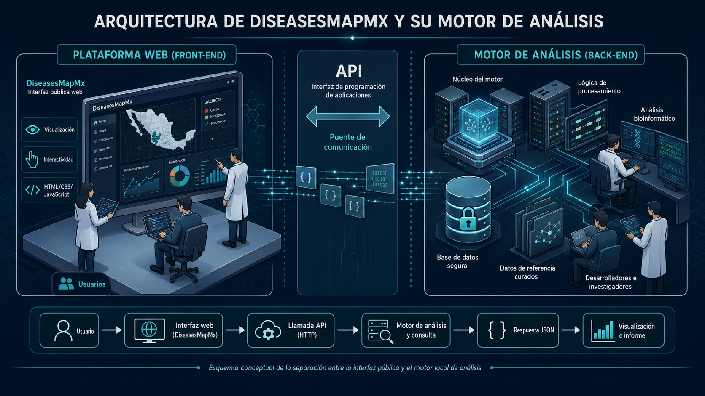

Acerca de la Plataforma
DiseasesMapMx es una iniciativa científica independiente orientada a la visualización, integración y exploración de información sobre vigilancia genómica y la epidemiología molecular de patógenos porcinos en México. La plataforma integra metadatos genómicos, moleculares y epidemiológicos asociados con la circulación de PRRSV y PCV2, permitiendo la exploración interactiva de patrones espaciales, temporales y moleculares relevantes para la salud porcina y la vigilancia de enfermedades.
Investigador Científico, Fundador y Desarrollador Principal

Perfiles Académicos
Colaboración Científica y Técnica
José Francisco Rivera Benítez
Investigador y colaborador científico con experiencia en diagnóstico viral y molecular, así como en el soporte técnico de laboratorio para actividades de investigación, vigilancia epidemiológica, detección y caracterización de enfermedades infecciosas en porcinos.
Investigador en el Instituto Nacional de Investigaciones Forestales, Agrícolas y Pecuarias (INIFAP), México. Adscrito al Centro Nacional de Investigación Disciplinaria en Salud Animal e Inocuidad (CENID-SAI), sede Palo Alto.
Recientemente ingresó como Miembro de la Academia Mexicana de Ciencias por sus contribuciones científicas en el campo de la virología. Ver Comunicado
Perfiles Académicos

Colaboración Institucional y Atribución de Datos
DiseasesMapMx es una iniciativa científica independiente desarrollada y coordinada por Alberto Jorge Galindo Barboza. En su etapa actual, la plataforma se presenta como un proyecto académico, informativo y de visualización científica orientado a integrar información genómica, molecular y epidemiológica relacionada con la vigilancia de patógenos porcinos en México.
La plataforma incorpora información genómica disponible públicamente, así como metadatos epidemiológicos derivados de actividades de investigación y vigilancia sanitaria realizadas en colaboración con instituciones, investigadores y actores vinculados con la salud porcina.
Las instituciones, afiliaciones y colaboradores mencionados en DiseasesMapMx se incluyen con fines de atribución científica, reconocimiento de colaboración y contextualización de los procesos de generación de datos. Su mención no implica, por el momento, que la plataforma constituya un sistema institucional oficial ni que represente una postura formal de dichas instituciones.
Cómo Usar el Tablero
El tablero está diseñado para la visualización exploratoria de metadatos moleculares curados y no identificantes. Permite revisar indicadores resumidos, filtrar registros por virus, año, región, etapa productiva, gen, linaje u otras variables disponibles, y explorar patrones espaciales, temporales y moleculares dentro del conjunto de datos.
Los mapas, gráficas y tablas deben interpretarse como resúmenes descriptivos de vigilancia, no como estimaciones oficiales de prevalencia, incidencia o estatus sanitario a nivel de granja. Los conteos representan los registros incluidos en la base curada y pueden estar influenciados por el diseño de muestreo, la selección diagnóstica, la disponibilidad de secuencias y la completitud de los metadatos.
- Inicie seleccionando el patógeno o grupo de registros de interés.
- Utilice los filtros para restringir la vista por año, región, etapa productiva, gen o linaje.
- Interprete los mapas en niveles geográficos agregados; no se muestran ubicaciones exactas de granjas.
- Utilice las tablas filtradas y los enlaces a GenBank, cuando estén disponibles, para revisar el contexto de cada registro.
- Considere los resultados del tablero como herramientas exploratorias para generar hipótesis epidemiológicas y orientar análisis posteriores.
Acerca del Módulo de Análisis de Secuencias
El módulo de análisis de secuencias de PRRSV-2 ORF5 realiza un tamizaje preliminar por referencia cercana contra un panel curado de secuencias ORF5 de PRRSV-2. Valida la entrada nucleotídica, aplica un umbral estricto para detener secuencias con baja identidad, compara la consulta contra referencias curadas, vincula los resultados aceptados con un contexto local del árbol maestro y traduce la región codificante ORF5 para resumir diferencias de aminoácidos en GP5.
Este módulo no es un reporte diagnóstico ni constituye una asignación filogenética formal. Los resultados deben interpretarse como una capa preliminar de tamizaje que requiere revisión de calidad de secuencia, contexto del panel de referencia, análisis filogenético, información epidemiológica e interpretación experta.
- Entrada recomendada: secuencia nucleotídica ORF5 de PRRSV-2 en formato FASTA o nucleótidos crudos.
- Las secuencias por debajo del umbral mínimo de identidad ORF5 se bloquean para interpretación de linaje.
- Los envíos autorizados pueden almacenarse localmente para revisión científica; la liberación pública nunca es automática.
- El reporte público excluye la secuencia nucleotídica enviada, la base FASTA completa, la tabla curada de metadatos, el alineamiento y el árbol maestro en formato Newick.
- En esta etapa, el acceso al motor de análisis se habilita únicamente a petición y por periodos limitados de prueba.
Arquitectura de la Plataforma y Motor de Análisis
DiseasesMapMx opera como una plataforma web pública separada de su motor local de análisis. La interfaz permite visualizar información, capturar solicitudes y mostrar resultados; el motor analítico realiza la validación, procesamiento, consulta de referencias curadas y devolución de resultados estructurados mediante API.

Esta separación permite mantener una interfaz pública ligera y documentada, mientras el procesamiento sensible, los datos de referencia curados y los envíos autorizados permanecen bajo control del entorno analítico.